¿Qué instrumento va contigo?
Un test de orientación para explorar instrumentos según tus gustos, presupuesto y condiciones de práctica.
Hacer el test →Un universo musical donde los instrumentos, las culturas y la creatividad se encuentran. Descubre sus historias, toca desde tu navegador y lleva tus ideas más lejos.
Escucha, investiga, practica y crea. Elige por dónde quieres empezar.
Walamort conecta la educación musical, la exploración de instrumentos y la creación sonora. Descubre qué sonidos te atraen, explora sus historias y aprende a tu ritmo.
Un test de orientación para explorar instrumentos según tus gustos, presupuesto y condiciones de práctica.
Hacer el test →Conoce las familias, historias y sonidos de una colección que seguirá creciendo.
Explorar el museo →Guías, clases y un curso de instrumentos del mundo en preparación.
Conocer la academia →Todos los instrumentos que han pasado por la serie, con sus videos. Cada semana se suma uno nuevo.
Experimenta, crea melodías y descubre nuevos sonidos directamente desde tu navegador. Sin descargar nada.
Explora sus nueve notas, afinaciones, efectos y grabación.
Tocar handpan → Nuevo · DisponibleKalimba virtual de 17 lengüetas: toca, improvisa y graba tus melodías.
Tocar kalimba → Disponible para tocarOcho notas, escalas, efectos y grabación de melodías. Toca con el teclado o con el ratón.
Abrir instrumento virtual →Prueba con pantalla, ratón o teclado. Activa el sonido al entrar y usa un volumen cómodo.
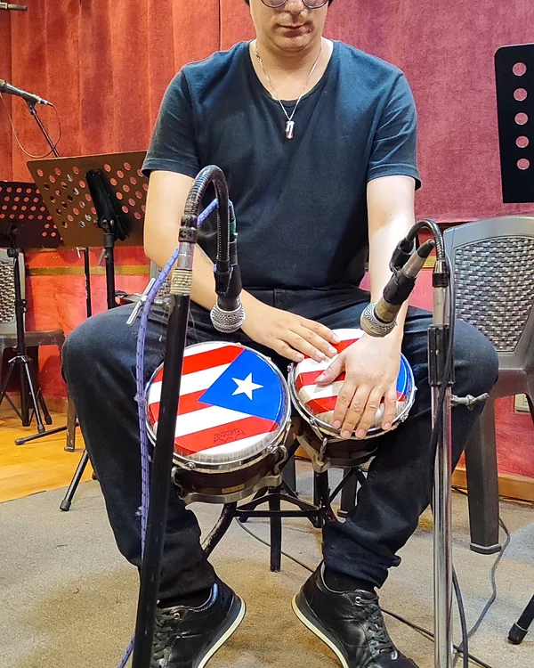
Mi trabajo reúne interpretación, docencia y producción musical. Cuéntame qué estás creando y conversemos sobre cómo darle forma.

Siempre he sentido una enorme curiosidad por la música y por los instrumentos: cómo suenan, de dónde vienen y qué historias cuentan. De esa curiosidad nace Walamort, un espacio para descubrir un instrumento nuevo cada semana.
Soy profesional en Artes de la Grabación y Producción Musical del ITM de Medellín. Hoy me dedico a enseñar música y a tocar el saxofón, y combino mi formación como productor con los ritmos latinos que me acompañan desde siempre.
Un diálogo entre el ritmo y el timbre por medio de la hibridación musical. Investigué cómo se combinan los dos géneros y lo convertí en música: compuse, grabé, mezclé y masterizé un EP instrumental que los fusiona.
EP de cuatro piezas


Elige tu instrumento, empieza gratis y avanza con los métodos Walamort en tres niveles: del primer contacto a crear tu propia música.
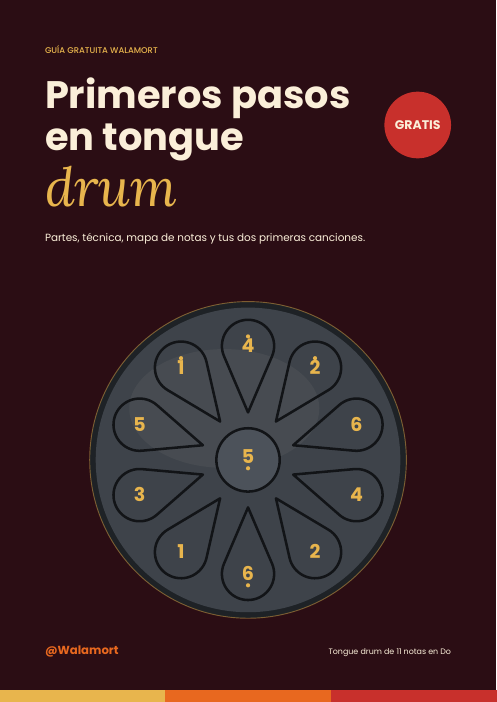
Gratis
Descargar PDF gratisSe abre al instante, sin registro. Guárdala desde el visor.
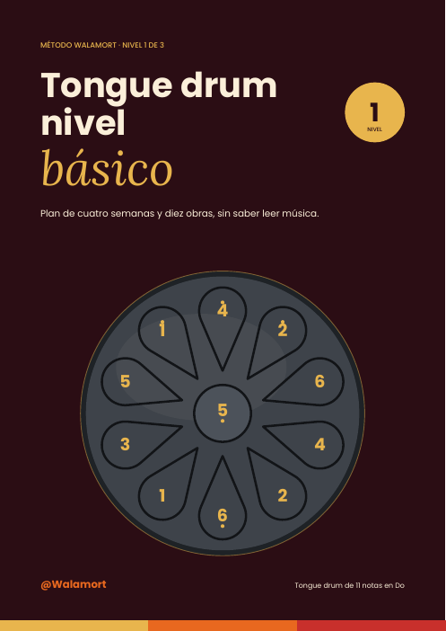
$24.900 COP USD 6 fuera de Colombia
Comprar ahora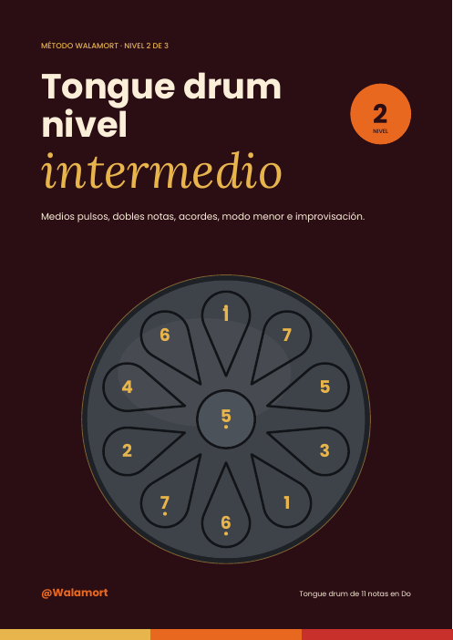
$29.900 COP USD 7 fuera de Colombia
Comprar ahora$34.900 COP USD 8 fuera de Colombia
Comprar ahoraBásico, intermedio y avanzado: 51 páginas, 21 canciones y obras, y un camino completo de principiante a creador.
$69.900 COP USD 16 fuera de Colombia
Comprar el pack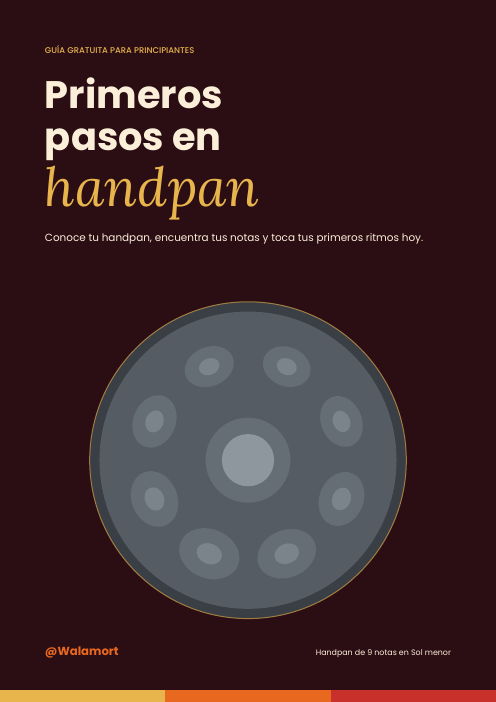
Gratis
Descargar PDF gratisSe abre al instante, sin registro. Guárdala desde el visor.
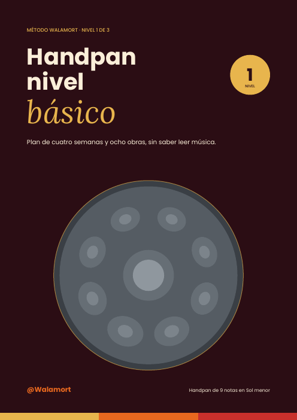
$24.900 COP USD 6 fuera de Colombia
Comprar ahora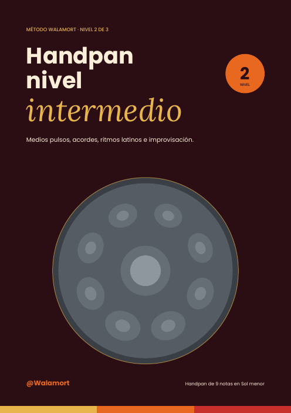
$29.900 COP USD 7 fuera de Colombia
Comprar ahora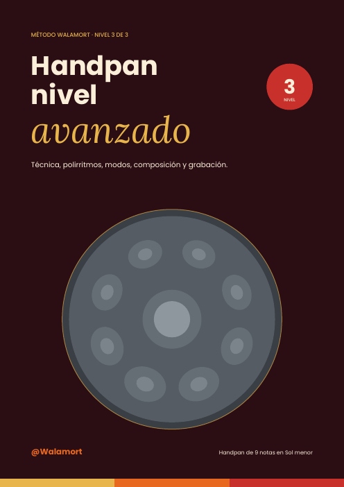
$34.900 COP USD 8 fuera de Colombia
Comprar ahoraBásico, intermedio y avanzado: 55 páginas, 18 obras originales y un camino completo de principiante a creador.
$69.900 COP USD 16 fuera de Colombia
Comprar el pack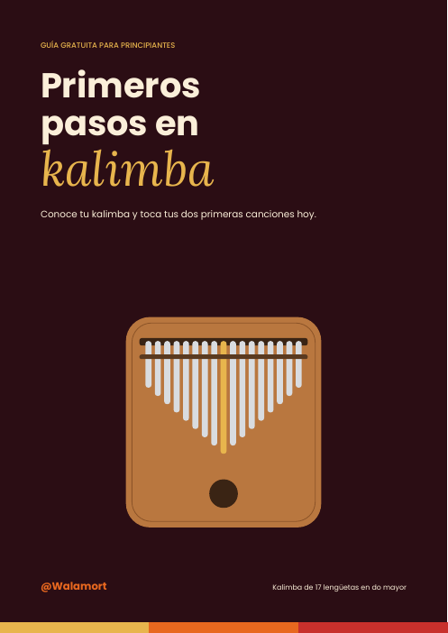
Gratis
Descargar PDF gratisSe abre al instante, sin registro. Guárdala desde el visor.

$24.900 COP USD 6 fuera de Colombia
Comprar ahora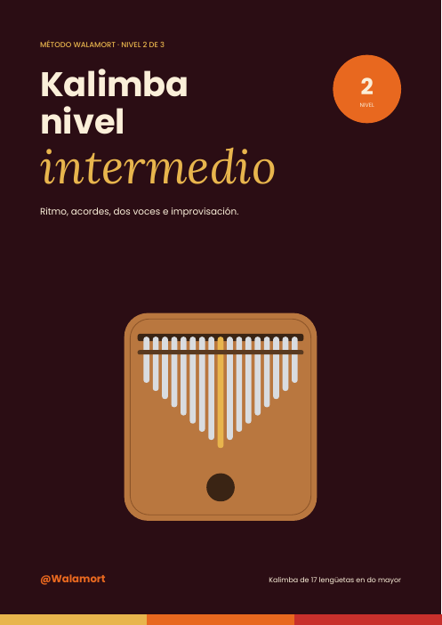
$29.900 COP USD 7 fuera de Colombia
Comprar ahora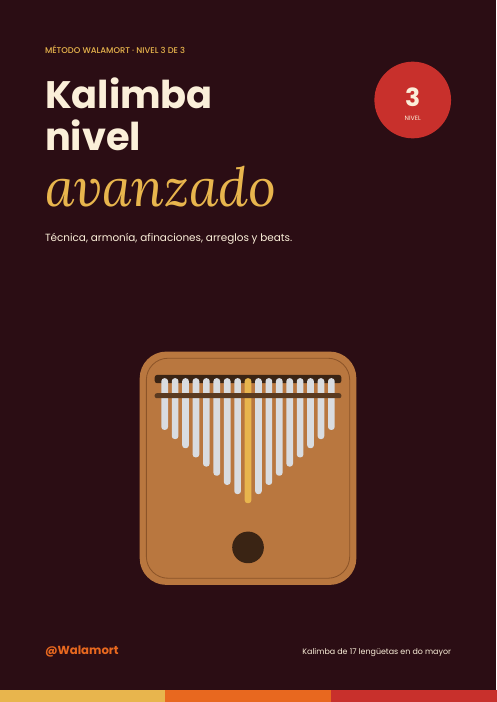
$34.900 COP USD 8 fuera de Colombia
Comprar ahoraBásico, intermedio y avanzado: 53 páginas, 20 obras y un camino completo de principiante a creador.
$69.900 COP USD 16 fuera de Colombia
Comprar el packPago seguro con Hotmart: recibes el PDF en tu correo apenas se confirma el pago, listo para el celular o el computador. ¿Dudas? Escríbeme por WhatsApp. Próximamente: sample packs con los sonidos de cada instrumento.
Clases personalizadas por videollamada, desde cualquier lugar. Tú eliges el tema y el horario; yo preparo cada clase según tu nivel y tus objetivos. Las clases de música son en español.
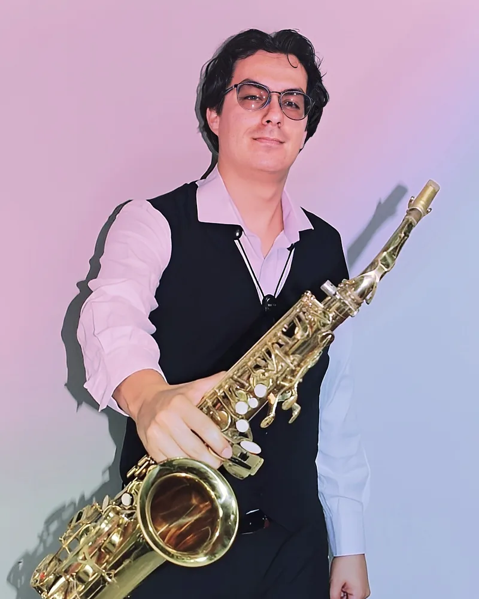
$25.000 COP 30 minutos · USD 7
Conocemos tu nivel, definimos objetivos y te llevas un plan de estudio.
$50.000 COP por clase · USD 13
Clase personalizada con material de apoyo y tareas para la semana.
$180.000 COP $45.000 por clase · USD 48
Una clase por semana durante un mes. Ahorras $20.000.
$340.000 COP $42.500 por clase · USD 90
Dos clases por semana o una durante dos meses. Ahorras $60.000.
Lunes a viernes de 15:00 a 21:00 y sábados de 10:00 a 18:00, hora de Colombia (UTC−5). Cada clase dura 60 minutos.
Un computador, tableta o celular con cámara, una conexión estable a internet y, si la clase es de instrumento, tu instrumento. Para teoría basta con un cuaderno.
Por Google Meet o Zoom. Después de confirmar tu reserva te envío el enlace por WhatsApp y por correo.
Por transferencia o enlace de pago, antes de la clase. Te envío los datos al confirmar el horario.
Sí, avisando con al menos 24 horas de anticipación. La reprogramamos sin costo.
No. Las clases, la guía gratuita y el método básico están pensados para personas que empiezan desde cero.
La guía gratuita se descarga desde esta página. Los métodos de pago te llegan por WhatsApp o por correo después de la compra.
Pistas latinas de 30 minutos en mi canal de YouTube, en versión completa y quitando un instrumento a la vez: toca tú la parte que falta. Ideales para saxofón, trompeta, piano, bajo, percusión o cualquier instrumento.
Los videos, beats y encuestas de cada semana están aquí.
Escribe para comprar un método, preguntar por las clases, cotizar una presentación o proponer una colaboración con tu marca.